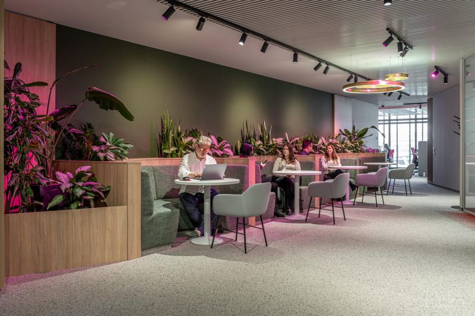
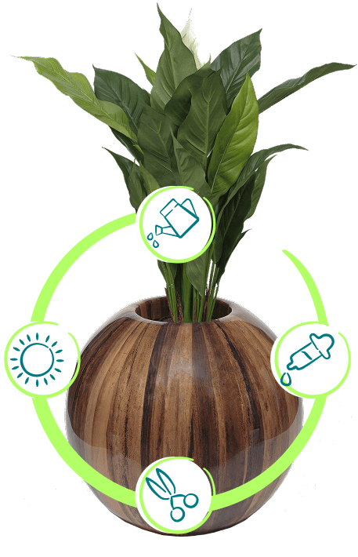
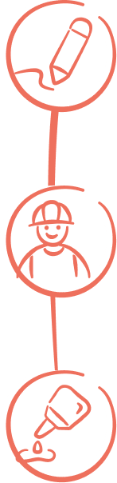
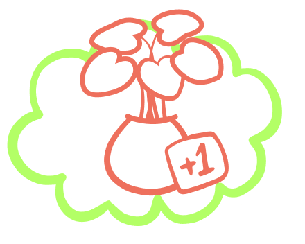
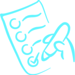
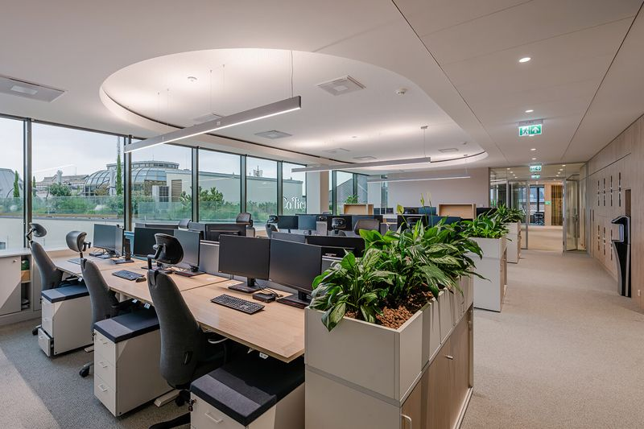

Ne a gyakornok locsoljon
Kéthetente vagy hetente jövünk: víz, tápanyag, metszés.
Növénygondozás →Bízd ránk a zöldet · gate 1
Nothing here is invented: the colours are the site's Elementor global colours, the fonts the kit's families, the illustrations and photographs the client's own uploads, the button shape the site's 50 px pill. The tokens are assets/tokens.css; the site, this page and the presentation load the same file. Approved with the build (D1, D6).
Contrast: primary on white 5.3 : 1; text on white 12.6 : 1; text on pale lime 11.4 : 1; white on primary 5.3 : 1; text on accent 9.1 : 1 — all ≥ 4.5 : 1 (computed from the hex values).
Baloo 2 (700) for the funny line and every page title — the kit's playful display face; Roboto Slab (600) for subheads and the FAQ questions; Roboto (400–700) for everything else. Three families, all the client's.
The logo (the hand with the leaf), the hand-drawn illustration set in the kit's lime and cyan (the plant cloud, the three step icons, the care ring, the checklist doodle, the two icons), the planters with faces — the client's own way of being silly — and sixteen real photographs of the team's installations. All in ../assets/img/, alpha preserved, photographs resized to 1600 and 800 wide.





Buttons: the site's own 50 px pill, primary teal, one primary per view; the "minta" badge (the kit's cyan) marks every number that is the client's to replace.
The proof band — the parent brand's numbers on the kit's pale lime between two lime rules, on every page after the hero (P1, P2).

Ne a gyakornok locsoljon
Kéthetente vagy hetente jövünk: víz, tápanyag, metszés.
Növénygondozás →The offer: a real photograph, the funny line in Baloo 2, the professional sentence in Roboto, a text link — no card, no shadow (P8).
h1 per page; the funny line is always followed by the professional sentence.